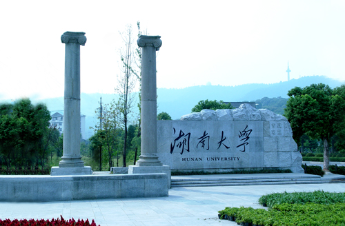

Xi encourages top reform team to meet planned goals
More focus should be on reforming economic system and improving fundamenta
Updated: 2016-08-31 11:12
President Xi Jinping called on Tuesday for solid efforts to press ahead with the country's planned reforms in accordance with the established timetable and road map. The country should focus more on economic system reforms and improve fundamental mechanisms that support these overhauls, according to a statement released after a meeting of the Central Leading Group for Deepening Overall Reform that was presided over by Xi. Policymakers promised to "significantly Policymakers promised to "significantly reduce" the government's role in the direct allocation of resources and to rely instead on the power of the market, and also to improve protection of intellectual property rights.
More will be done to encourage private investors to explore opportunities in environmentally friendly sectors, according to the statement. Authorities at all levels were ordered to fulfill their poverty relief responsibilities and to improve land reforms for rural areas. As part of efforts to improve the environment, a pilot environmental damage compensation system will be rolled out in Jilin, Jiangsu, Shandong, Hunan, Guizhou and Yunnan provinces and in Chongqing municipality. According to the statement, science and technology institutes should adopt a salary system and pay raise process that reflects the value of such work and provides motivation for scientists.